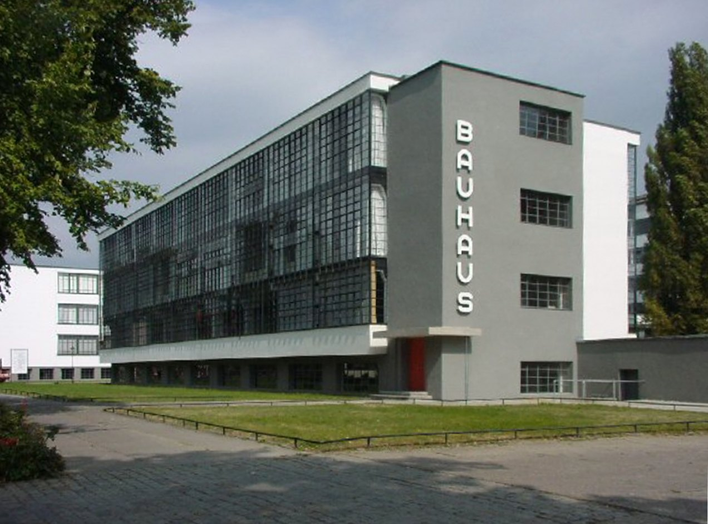
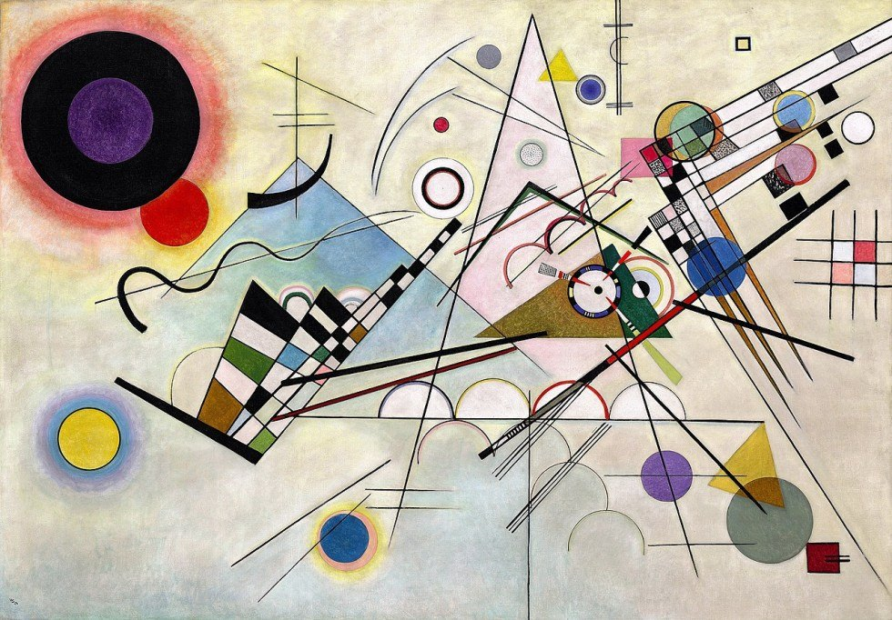
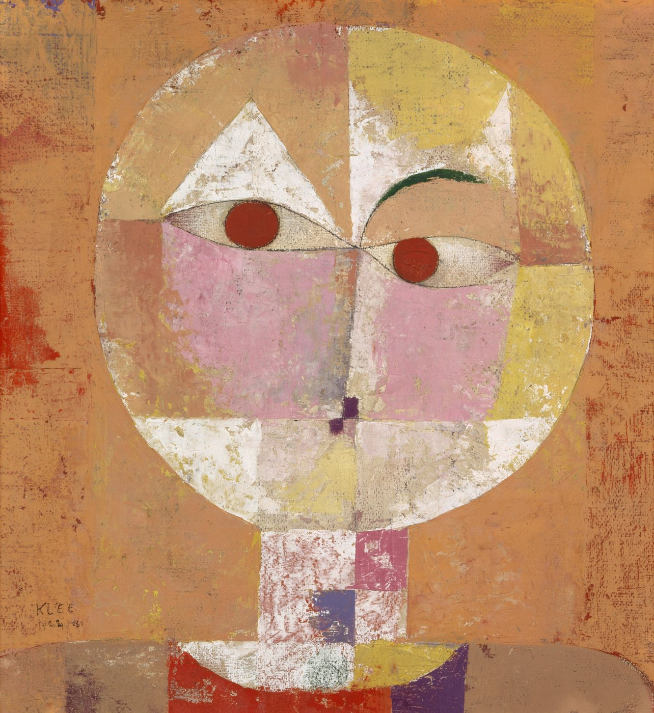
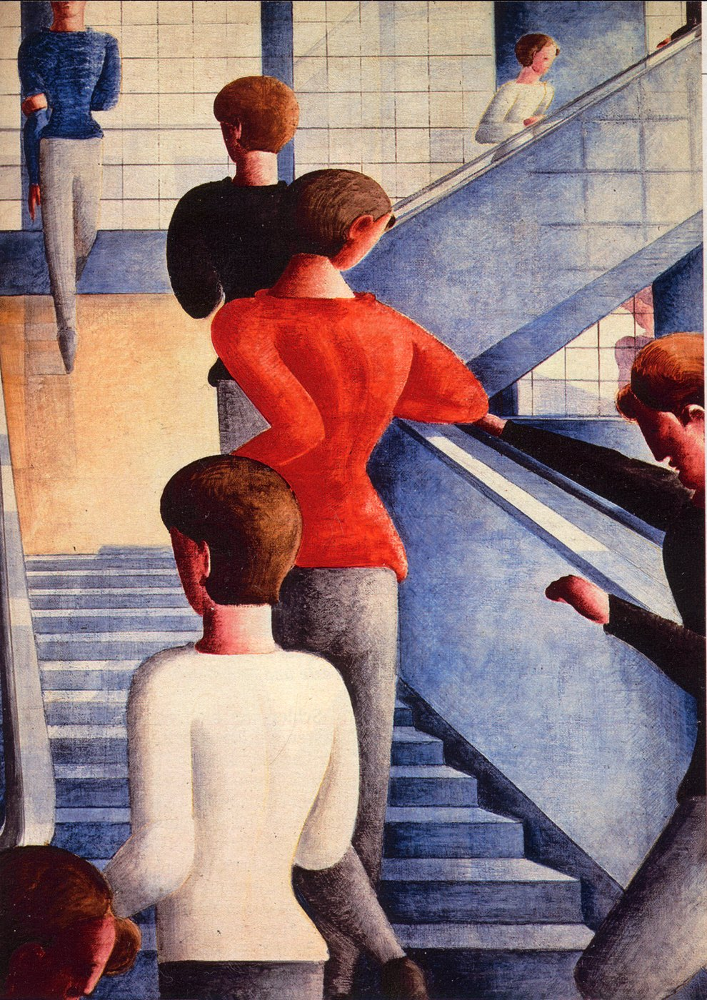
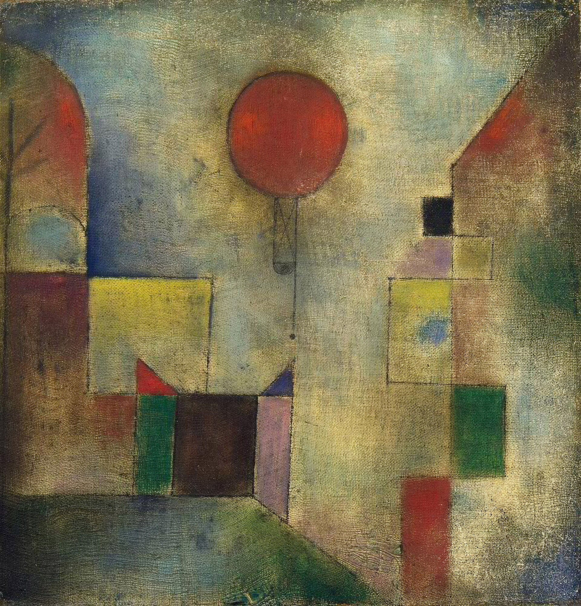
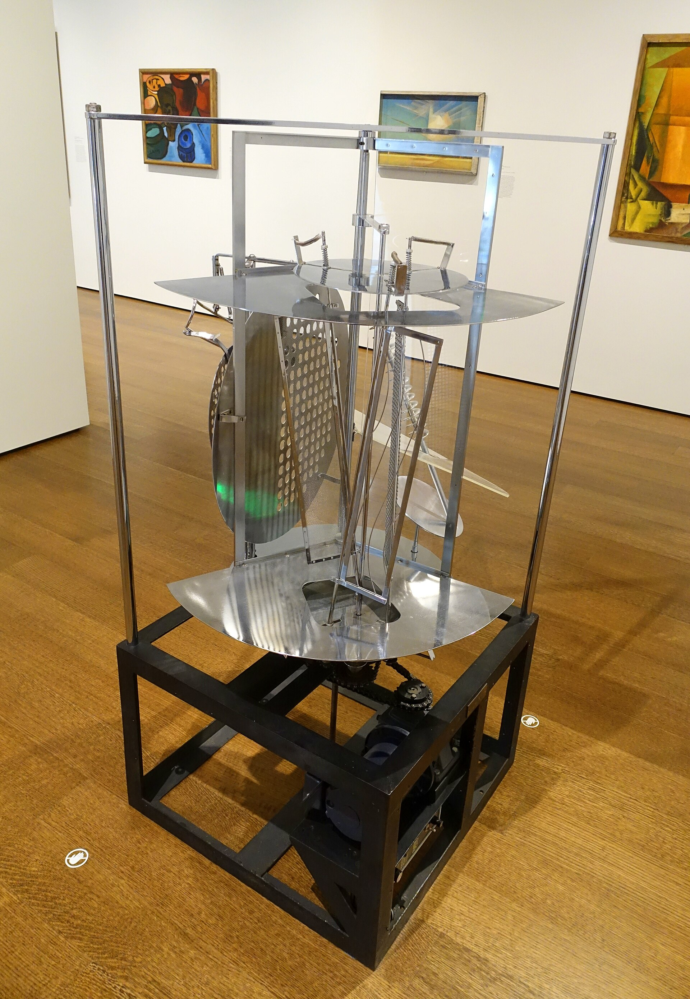
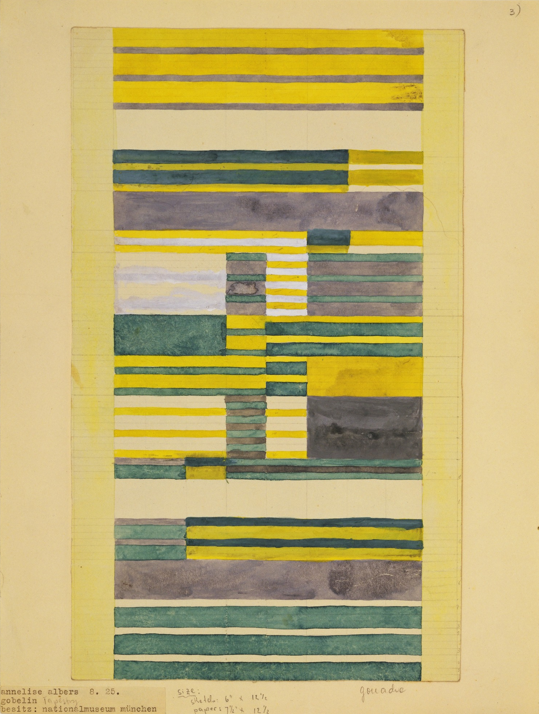

Walter Gropius
바우하우스(Bauhaus)는 단순한 건축양식이 아니라 1919년 발터 그로피우스가 바이마르에 설립한 학교이자 교육실험이었다. 회화·조각 같은 순수미술과 공예·가구·타이포그래피·건축의 장벽을 허물고, 현대 산업사회에 맞는 새로운 설계 방법을 만들려 했다. 학교는 바이마르, 데사우, 베를린을 거치며 1933년 문을 닫았지만 그 교육철학은 세계 현대 디자인의 기반이 되었다.
연결 학습
바우하우스는 1919년부터 1933년까지 독일에서 운영된 학교로, 예술·공예·기술을 교육과 제작 속에서 다시 연결하려 했다. 하나의 외관 스타일이 아니라 교장, 도시, 공방에 따라 목표가 변한 실험적 제도다.
아르누보의 총체 예술과 공예 존중을 이어받지만 유기적 장식을 줄이고 표준화와 산업 생산을 강조한다. 데 스틸·구성주의와 교류했지만 그들을 그대로 합친 양식은 아니다.
흔한 오해: 평평한 지붕과 흰 벽이 바우하우스의 전부가 아니다. 직물, 무대, 사진, 타이포그래피, 교육법까지 포함하는 학교의 활동으로 이해해야 한다.
미술사 데이터베이스에서는 독립 항목으로 등록할 가치가 충분하다. 다만 정확히 말하면 하나의 학교·교육운동·디자인 운동이며, 단일한 회화 스타일은 아니다.
회화와 조각을 공예·건축·제품설계와 분리하지 않는다.
재료를 직접 다루며 형태·색·구조를 배우는 실험교육을 강조한다.
특히 데사우 시기에는 대량생산과 표준화 가능성을 적극 탐구한다.
불필요한 장식을 줄이고 기능·재료·기하학을 드러낸다.
가구·그래픽·무대·건축까지 생활 전체를 설계 대상으로 본다.
그로피우스가 미술학교와 공예학교를 통합. 초기에는 표현주의적·공예적 이상이 강했다.
산업생산과 기술을 더 적극적으로 받아들이며 방향이 바뀐다.
새 바우하우스 건물이 완성되고 디자인·건축·산업적 생산의 중심이 된다.
사회적 기능·집단적 설계·실용성을 더욱 강조한다.
학교는 정치적 압력 속에서 베를린으로 옮겨갔고 1933년 폐쇄된다.

학생은 색·형태·질감·재료를 실험하며 과거 양식을 베끼기 전에 조형의 기본 원리를 배웠다.
금속·직조·가구·인쇄·벽화·무대 등 실물 제작을 통해 예술과 기술을 연결했다.
좋은 디자인을 개인의 고급 공예품에 가두지 않고 반복생산 가능한 제품으로 발전시키려 했다.



| 오해 | 정확한 이해 |
|---|---|
| 바우하우스 = 건축양식 | 건축·디자인·공예·회화·무대·교육을 포괄한 학교와 운동이다. |
| 처음부터 기능주의였다 | 초기 바이마르 시기는 표현주의적·수공예적 이상이 강했고 이후 산업·기술 쪽으로 이동했다. |
| 장식을 무조건 금지했다 | 핵심은 장식을 도덕적으로 금지하는 것이 아니라 재료·기능·제작방식에서 형태를 도출하려는 태도다. |
| 모든 작품이 같은 스타일 | 교수와 학생의 회화·직조·가구·그래픽은 매우 다양했다. |
| 독일에서만 끝났다 | 1933년 이후 교사와 학생의 망명으로 미국·이스라엘 등 세계 각지에 교육과 디자인 철학이 확산되었다. |
| 국가·지역·세부 사조 | 지역적 특징 | 대표 화가·제작자 | 더 볼 화가 |
|---|---|---|---|
| 독일 — 바우하우스 |
| 발터 그로피우스 | 파울 클레, 바실리 칸딘스키, 라슬로 모호이너지, 아니 알버스 |
독일의 교육 개혁과 바이마르 공화국은 공예·예술·산업을 묶었고, 망명한 교사들은 미국 디자인 교육으로 그 원리를 옮겼다. 물건과 건물이 아름다운가뿐 아니라 제작·사용·교육을 함께 바꾸려는지 보자.
바우하우스는 양식 이름이라기보다 예술, 공예, 기술, 산업 생산을 하나의 교육 체계로 묶은 학교이자 실험실이었다.
위 국가별 전개 표에 제시한 인물은 상단에 이미 소개되었는지와 관계없이 모두 다시 확인할 수 있게 배치했다. 로컬 이미지 파일이 없는 인물은 이미지 추가 예정 카드로 남긴다.
선정 이유: 창립자 그로피우스가 설계한 데사우 교사는 바우하우스의 교육, 기능, 재료, 시각 정체성이 실제 공간으로 결합된 기준점이다.
유리 커튼월은 내부 작업을 드러내고 서로 다른 기능의 동들이 비대칭적으로 연결된다. 장식적 정면보다 사용과 동선을 형태의 근거로 삼아 예술과 기술의 통합이 추상 구호가 아니라 생활 환경 설계임을 보여 준다.

더 볼 이유: 클레는 바우하우스 교육이 색·형태·리듬의 기초 연구와 개인적 상상력을 함께 다룬 방식을 보여 준다.
단순 기하 형태와 체계적인 색 관계는 바우하우스의 조형 교육을 드러낸다. 어린아이의 기호처럼 보이는 선에 음악적 리듬과 시적 이야기를 담은 점은 클레만의 특성이다. 다른 사조 연결: 청기사파와 표현주의에도 속하며, 이 카드에서는 바우하우스의 관점에서 본다.
더 볼 이유: 칸딘스키는 청기사파에서 발전한 추상 색채 이론을 바우하우스의 체계적인 조형 교육으로 연결했다.
기하학적 형태와 자유로운 선, 노랑·빨강·파랑의 관계가 긴장과 리듬을 만드는 점에서 바우하우스의 기초 조형 연구가 드러난다. 정신적 추상을 분석 가능한 교육 언어로 정리한 점은 칸딘스키만의 특성이다. 다른 사조 연결: 청기사파에도 속하며, 이 카드에서는 바우하우스의 관점에서 본다.

더 볼 이유: 모호이너지는 바우하우스가 회화에서 사진·타이포그래피·기계·빛으로 교육 범위를 넓힌 중심 인물이다.
회전하는 금속과 투명 재료가 빛과 그림자를 계속 바꾸어 기술과 시각 실험의 결합을 보여 준다. 매체 구분보다 새로운 시각 교육을 앞세운 점은 모호이너지만의 특성이다.

더 볼 이유: 아니 알버스는 바우하우스의 기하학과 기능주의를 직조의 재료·구조·촉각으로 확장한 핵심 디자이너다.
반복되는 격자와 색실의 관계는 추상 조형과 실용 직물이 분리되지 않음을 보여 준다. 주변화된 직조 공방을 현대 디자인과 건축의 실험실로 바꾼 점은 알버스만의 특성이다.